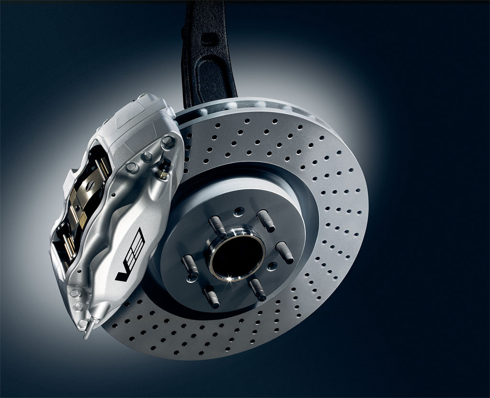
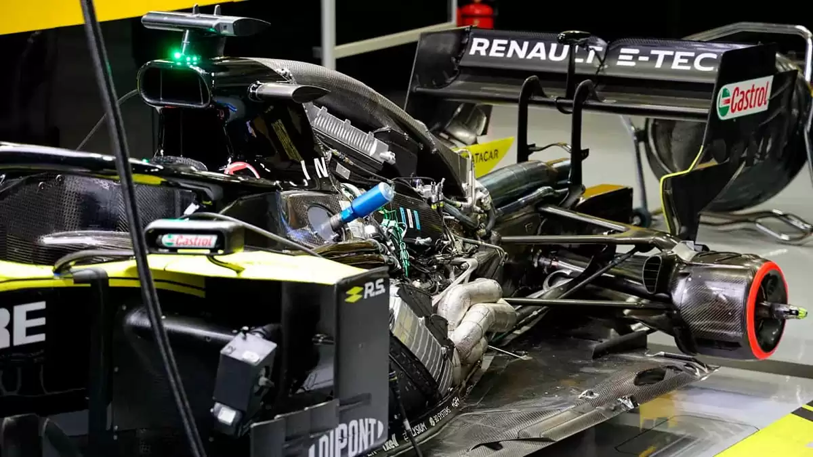

ㅤTrabalho - Otávioㅤ
A Fórmula 1 e a Tecnologia
A fórmula 1 nunca foi só apice do automobilismo, sempre foi considerada um laboratório de inovações e tecnologias, que depois de um tempo sendo testadas nela, vão parar no carros de rua. Aqui vamos citar tecnologias que provavelmente você usa no seu carro, mas veio da Fórmula 1.
Freios melhores
Discos de freios, muito mais eficientes do que o sistema por
tambor, são herança da Fórmula 1. Atualmente, os discos são feitos de fibra de carbono para as
corridas -- material que ainda é muito caro para carros populares, mas se espalham pelo portfólio de
esportivos de luxo, em compostos de carbono-cerâmica. Por ora, o aço deve ser manter como o material
usado. Além disso, sistemas como o ABS, que evita o travamento das rodas, e o controle de tração também
vieram das pistas.

Motorização Eficiente
Os motores usados na Fórmula 1 são muito
exigidos e precisam trabalhar em altas temperaturas. Para não terem problemas no funcionamento,
precisam usar materiais de alta resistência, como alumínio e titânio. Apesar de o titânio ter um uso
mais restrito no carros comuns, o alumínio já é bastante utilizado. Outro recurso originário das pistas
é o desenvolvimento dos turbocompressores, que aumentam a eficiência na queima de combustível e vêm se
popularizando nos últimos anos. Por fim, se é possível dar a partida no motor do seu carro apenas
apertando um botão em vez de girar a chave na ignição, agradeça à F1.
